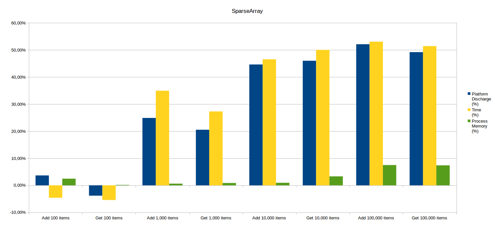
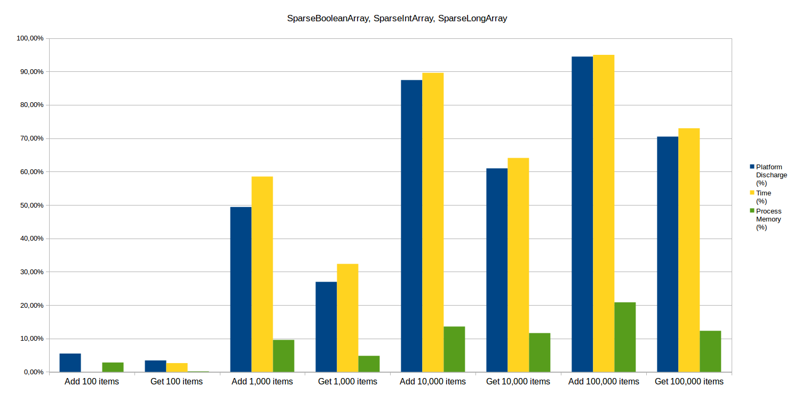
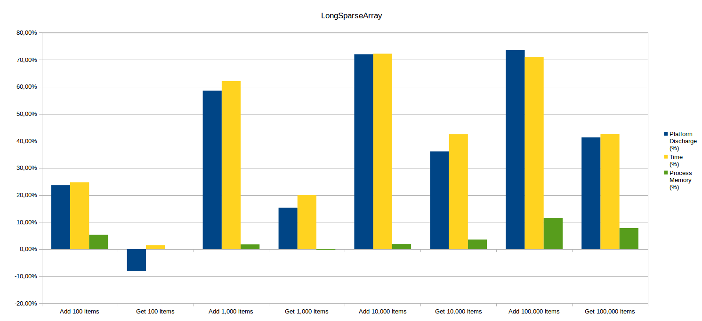

Controlling the energy consumption is becoming more and more critical when developing mobile applications. Recent versions of Android integrate for instance a doze mode in which the smartphone shuts down treatments to only wake them up periodically, however it is not sufficient and application developers still have a role to play.
At the application level, a good start to improve the energy consumption is the choice of appropriate data structures.
Android offers structures aimed at replacing HashMaps in some cases in particular: SparseArray and ArrayMap.
Now let’s see how they compare to HashMaps!
Introducing the contestants
Android offers data structures to replace HashMap in some specific cases:
| Standard Java Structure | Corresponding Android Structure |
|---|---|
| HashMap<K, V> | ArrayMap<K, V> |
| HashMap<Integer, V> | SparseArray<V> |
| HashMap<Integer, Boolean> | SparseBooleanArray |
| HashMap<Integer, Integer> | SparseIntArray |
| HashMap<Integer, Long> | SparseLongArray |
| HashMap<Long, V> | LongSparseArray<V> |
Let us start by describing the basic functionning of these two kind of structures.
A HashMap is a structure allowing one to store (key,value) items. A hash function pairs each key to an array index where the value will be stored.
Android structures are composed of two arrays: ArrayMap uses a sorted array for the key hashes and the other one for the (key,value) items stored in the same order than the corresponding hash. SparseArray keeps the keys sorted in its first array and the values in the second one.
Complexity-wise, searching for an item stored in a HashMap is done in constant time on average, and with a logarithmic complexity for SparseArray and ArrayMap.
However, using a HashMap implies a memory overhead because the structure must be large enough to avoid hash collisions. Moreover, it does not allow you to have primitive types as key or value (int, long, etc.)
Which data structure should I use?
Several resources exist online which debate the pros and cons of each data structure.
In his Exploring hidden Java costs talk, Jake Wharton thoroughly explains how HashMap and SparseArray work to show the benefits of the latter. However, SparseArray is only interesting, he says, when you have to store less than a thousand items.
In the post called *HashMaps, ArrayMaps and SparseArray*s in Android, Deepak Mishra also explains precisely how each data structure works along with the algorithmic complexity of each operation. His conclusion is that transitioning to ArrayMap and SparseArray** will benefit your application memory-wise, without any major drawback of the performance.
Android performance patterns – ArrayMap vs HashMap gives a clear advantage to ArrayMap but only for small data structures (less than 1000 items) which are queried a lot.
Romain Guy draws the same conlusions in his talk Android Memories, in which he demonstrates the gain of memory provided by SparseIntArray compared to HashMap (for 1000 items). He advises against Android structures for larger sizes.
Android Performance Tweaking: ParseArray Versus Hashmap supports its arguments in providing reading and writing time measurements for data structures from 1 to 1 million items. The conclusions are the following: SparseArray is more interesting from 10,000 items, especially if data structures are more used in writing than reading access. Lastly, it is globally not recommended to use structures with more than 10,000 items**.
In this newer article, Memories of Android, Android structures are advocated when key’s type is primitive, and when the number of items is less than a few hundreds.
Finally, the Android documentation mentions that ArrayMap and SparseArray** were not designed to store a large number of items; particularly as item lookup is made in a dichotomous way, which is disadvantageous when comparing to hash calculations for HashMap structures.
To conclude this overview, the least we can say is that it is difficult to make a final decision and have a straight opinion.
Android specific collections seem efficient to store a limited number of items, but opinions differ for larger structures reaching 10,000 items for instance (or even just 1,000).
The only article providing measurement results is quite old now, tests were performed on a Samsung Galaxy 2 with Android 2.3.4 and a lot has changed in the Android world ever since then (replacement of JIT by ART for example). Other articles and presentations are more recent but do not include any measure and, a fortiori, specifically do not include any energy measurement
That is why it is interesting to measure the cost of all these structures from a performance point of view, as well as a memory and energy consumption one.
Measurement methodology
Measuring the consumption of a smartphone requires controlling the environment as much as possible.
Indeed, a lot of external factors can interfere with the device activity.
Moreover, if it is possible to measure CPU usage for a given process, it is not the case for energy consumption.
Discharge metrics provided by the Android system are related to the whole platform, and it is therefore necessary to improve as much as possible the signal-to-noise ratio by monitoring all third party activites.
On our loyal Nexus 5 with Android 5, we did the following configurations:
- brightness set a the lowest level;
- GPS and Bluetooth disabled;
- voice control (« Ok, Google ») disabled;
- automatic updates and notifications disabled;
- etc.
Moreover, all measures were performed with a battery level between 20 and 80 %, because the device behavior changes a lot above and beyond these two values. For example, Android is more agressive on resource saving when the battery level is low.
We used the Android probe developped within the GREENSPECTOR premises, which permits to retrieve several metrics either linked to the global platform, or linked to a specific process (in our case, the Java process writing in data structures or reading them):
- measure duration;
- platform discharge in Ah;
- process memory consumption.
For each structure, we assessed separately writing and reading an item.
Insertion is performed on structures initialized with the default size, which will necessarily induce an overcost when resizing.
Each measure was performed at least 5 times to ensure the results repeatability.
Results
Now is the time for an analysis of results so we can see if there is a gain in using ArrayMap and SparseArray instead of HashMap.
ArrayMap
For this structure, results are relatively similar for writing and reading tests. Overall, the advantage is for HashMap in energy and performance, but with quite low gains (below 10%).
Regarding memory consumption, HashMap and ArrayMap are comparable because the gains observed are very low (less than 2%) and are therefore included in the standard deviation of the measures.

SparseArray
For a 100 items, results are similar between SparseArray and HashMap.
To read items, SparseArray allows a ligth energy and memory gain but is slightly slower.
To write items, the advantage is for HashMap which is more energy-and-time-saving.
Nevertheless, observed gains are in each case relatively low (about 5%).
Memory use is very similar, except for 100,000 items with a small gain of about 7% for SparseArray.
From 1000 items, the balance clearly weights in favour of SparseArray (writing and reading) with regards to energy (25% gain) and execution time (30%). This trend continues with 10,000 and 100,000 items (50% gained in energy and time).

SparseBooleanArray, SparseIntArray, SparseLongArray
Results for these 3 containers are in line with SparseArray, but are more distinct.
When structures contain 100 items, it is still pretty hard to distinguish them (small differences in energy, memory consumption and performance).
But, again, as soon as there are more than 1,000 items, Android containers have the advantage: as the structure’s size increases, the gain in energy, execution time and memory rises.
To read items, we get respectively 50%, 90% and 95% of gain in energy and time execution for 1,000, 10,000 and 100,000 items.
To write items, gains are a little bit lower: respectively 30%, 60% and 75% of gain in energy and time execution for 1000, 10,000 and 100,000 items.
Regarding memory, the gain reaches 20% for SparseIntArray.

LongSparseArray
LongSparseArray’s case is different from the other SparseArray ones.
Gains from writing an item are indeed observable from 100 items (unlike SparseArray which has an int key): 25% in energy and time, and 5% in memory. When the size of data increases, the gains also increase but seem to be capped at a lower value.
For 1,000 items, LongSparseArray consumes 59% less energy, is faster by 62% but uses only 2% less memory.
For 10,000 and 100,000 items, energy and time gains are similar (75%).
To read 100 items, LongSparseArray is a little bit more energy consuming than HashMap this time, indeed it consumes 8% more.
But from 1,000 items, it is again more effective as it consumes 15% less energy and is 20% faster.
For 10,000 items, it saves 36% of energy and time execution is reduced by 52%.
Just like with writing items, results for 100,000 items are similar with 10,000 items, with 41% energy gain and 43% time execution gain.

Conclusion
If you use HashMap with Integer or Long keys, you should use SparseArray instead.
This Android container seems to be more effective for structures with a larger size, particularly its specialized variants for booleans, integers and longs.
The small difference between ArrayMap and HashMap can probably be explained by the fact that ArrayMap is a generic container (keys and values type is free), hence less specialized and optimized than SparseArray containers.
You have probably noticed the correlation between time execution and energy consumption (gain values are always very close). For these scales (up to 94% gain!), it is indeed logical that a process whose execution time is much higher, consumes more energy.
Stay tuned for more good practices!